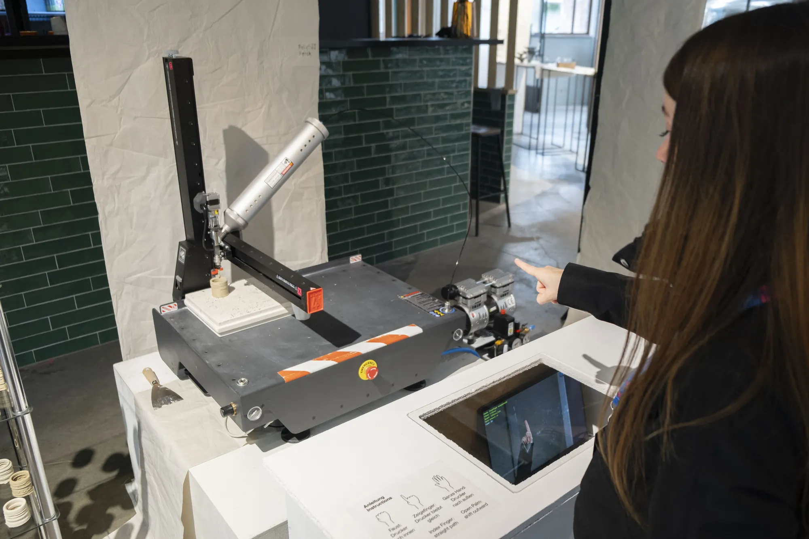
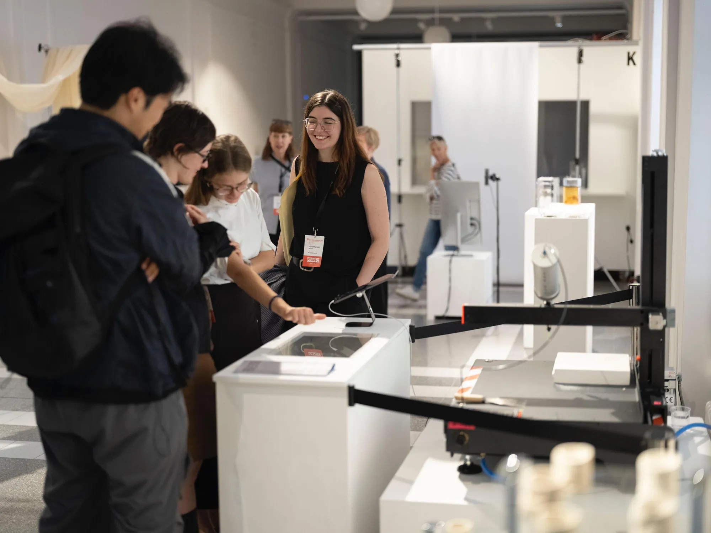
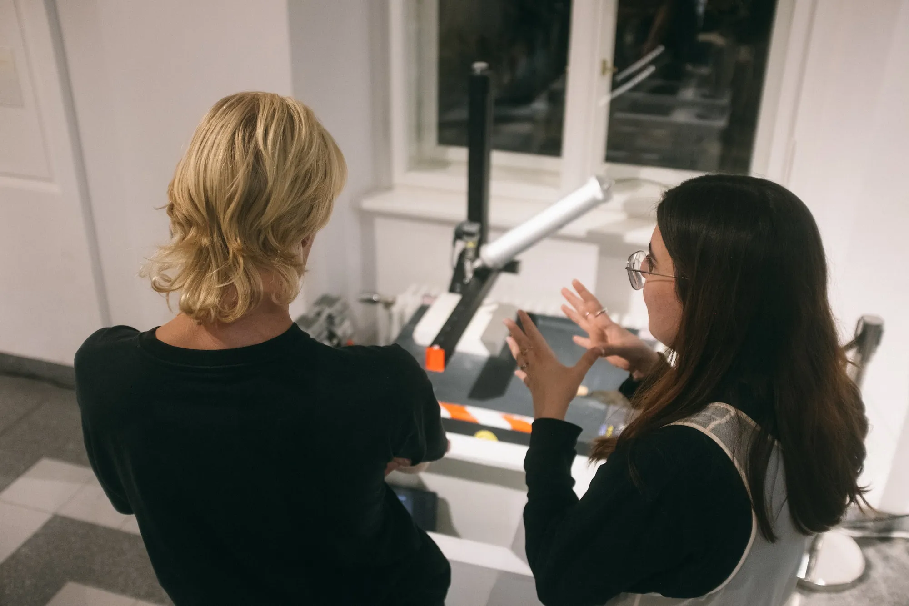
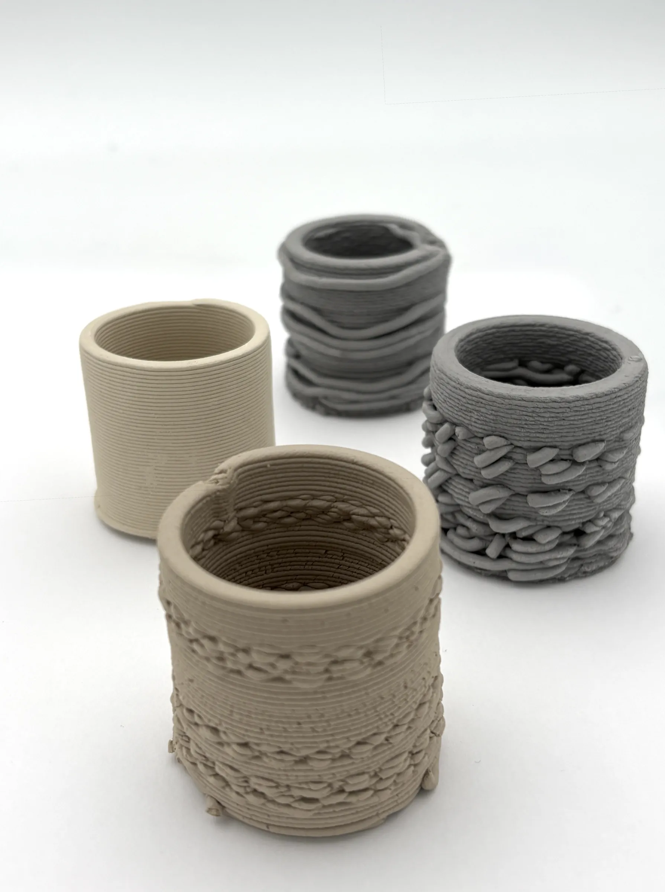
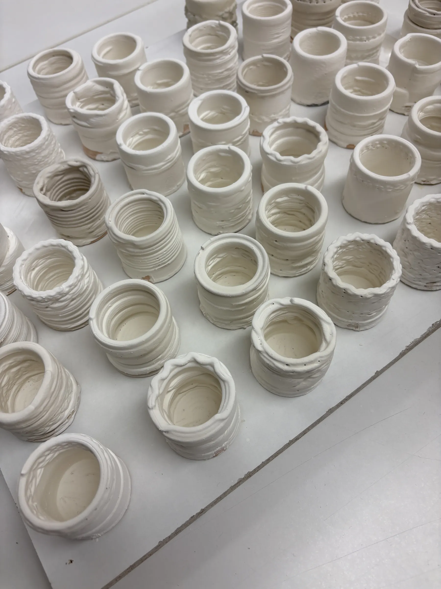

From Gesture to Object
A clay 3D printer that is controlled in real time by hand gestures.
- Year
- since 2025
- Context
- Digital Transformation II, M.A. Design & Future Making, Pforzheim University
- Team
- solo project
- Role
- concept, development, fabrication
- Tools
- Lutum 4.6 clay 3D printer, Google MediaPipe, Python, G-code, TouchDesigner

01 / Interface
From Gesture to Object is a body-driven interface for digital fabrication. A clay 3D printer is controlled in real time through hand gestures, without CAD software or traditional design tools. Built with Google MediaPipe and Python, the system tracks hand motion and translates it into G-code commands that go directly to the printer. The resulting clay forms are sculptural imprints of human movement, embodied sketches formed by gesture.

02 / Gesture
The project starts from a simple question: what if we could interact with machines in a more intuitive way? A camera above the workspace follows the hand. A fist moves the print path 3 mm inwards, a pointing finger keeps it where it is, an open palm moves it 3 mm outwards. The G-code is sent to the printer in small packets, so the form changes while it is being printed.


03 / Objects
Clay is forgiving, and the objects differ from the usual 3D-printing look: they carry tremors, hesitations and flowing movements, a physical archive of gestural communication. The project is also about access, because people without technical training can create printable objects.


04 / Exhibitions & links
Exhibitions & presentations
- Ars Electronica Festival, 2025
- Dutch Design Week, 2025
- A.K.T;, exhibition "Future Narratives"